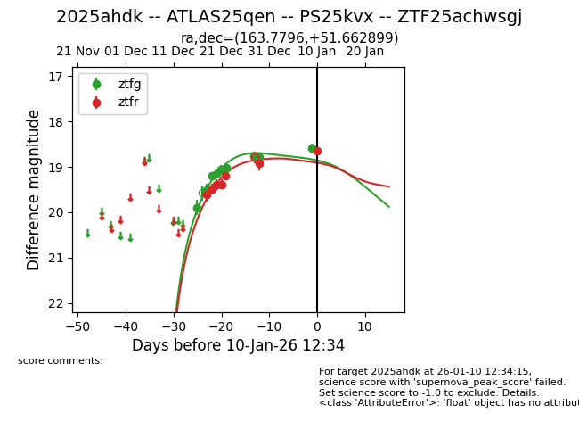
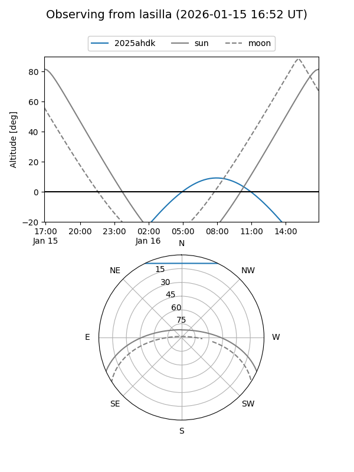
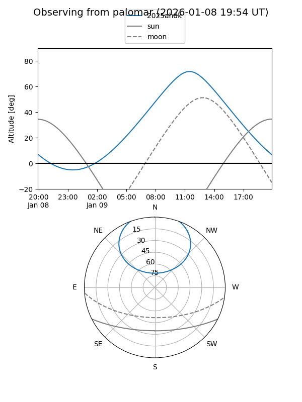
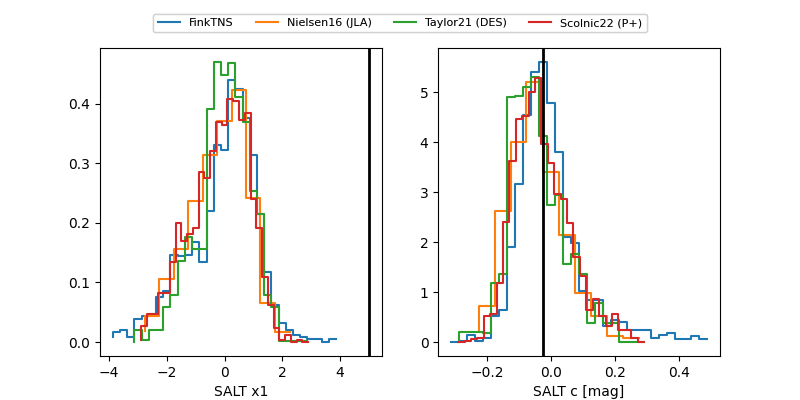

2025ahdk
Target 2025ahdk at 2026-01-12 11:10
Aliases and brokers:
FINK: link
Lasair: link
ALeRCE: link
TNS: link
YSE: link
alt names
ZTF25achwsgj (ztf,fink_ztf)
2025ahdk (tns,yse)
ATLAS25qen (atlas)
PS25kvx (panstarrs)
Coordinates:
equatorial (ra, dec) = 163.7796,+51.66290
equatorial (HMS+DMS) = 10:55:07.10,+51:39:46.44
galactic (l, b) = (156.6992,+57.15287)
Flags:
Photometry:
last ztfg=18.71, ztfr=18.70
10 ztfg, 8 ztfr detections
Lightcurve

Visibility


Additional plots
